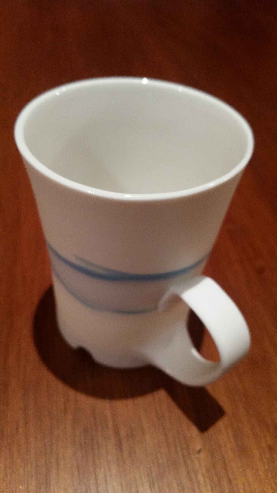
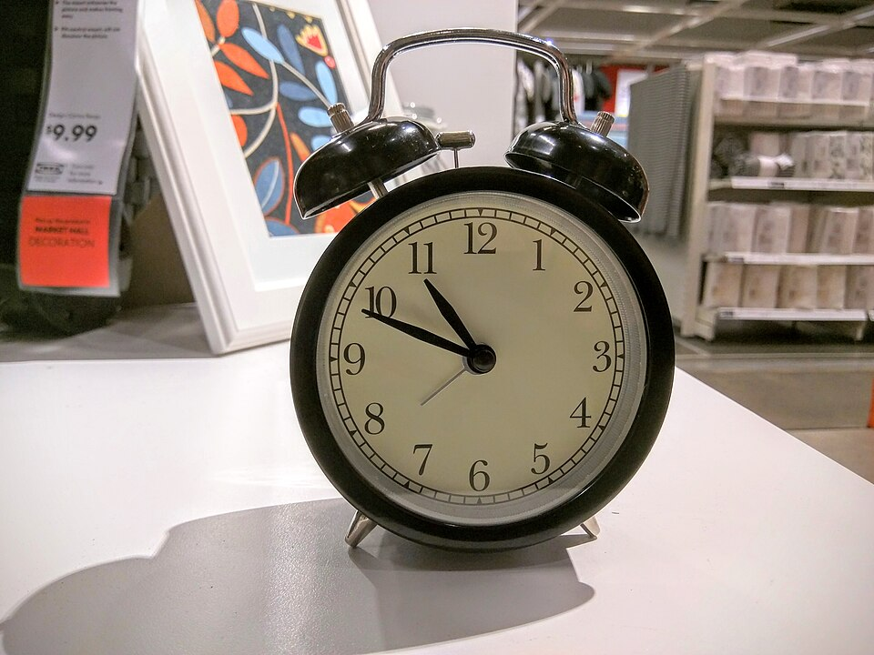
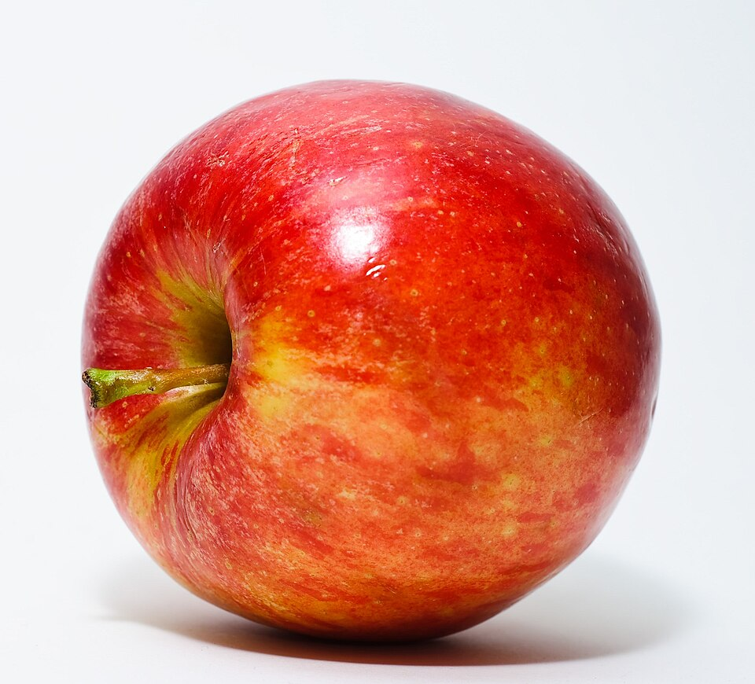
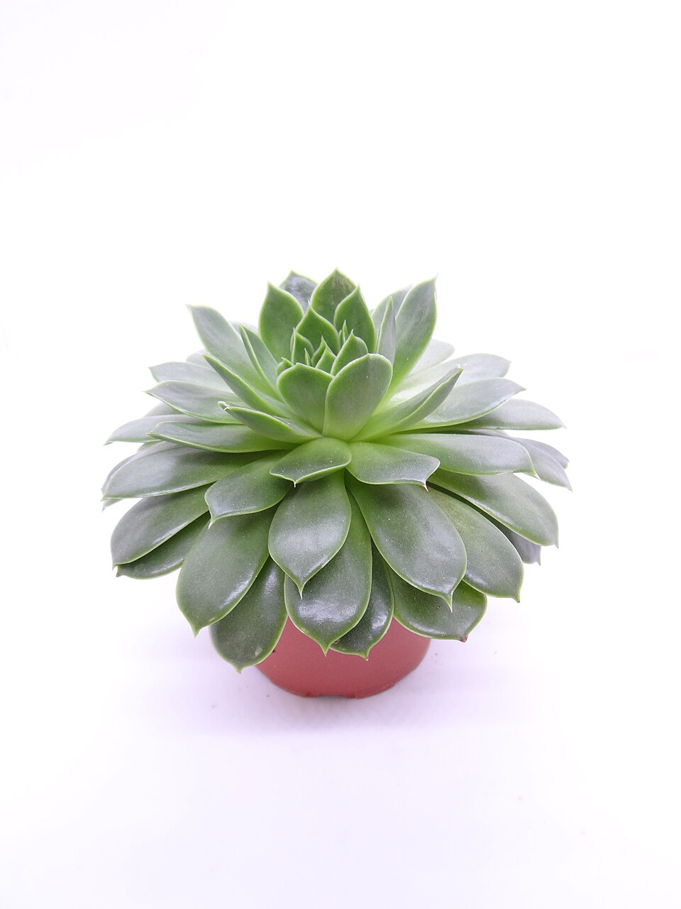

杯子

把手、杯口与主体轮廓
Aoziwe · CC BY-SA 4.0 · 原始来源
3类物品＋2类植物；绿萝同图再创作，共6个case。当前只准备输入，未调用模型，未判定质量通过。

把手、杯口与主体轮廓
Aoziwe · CC BY-SA 4.0 · 原始来源

薄部件、刻度与文字
Maksym Kozlenko · CC BY-SA 4.0 · 原始来源

果柄、光滑主体与色彩

多叶、藤蔓与盆体
LucaLuca · CC BY-SA 3.0 · 原始来源

密集叶片、遮挡与盆体
Anne Jea. · CC BY-SA 4.0 · 原始来源